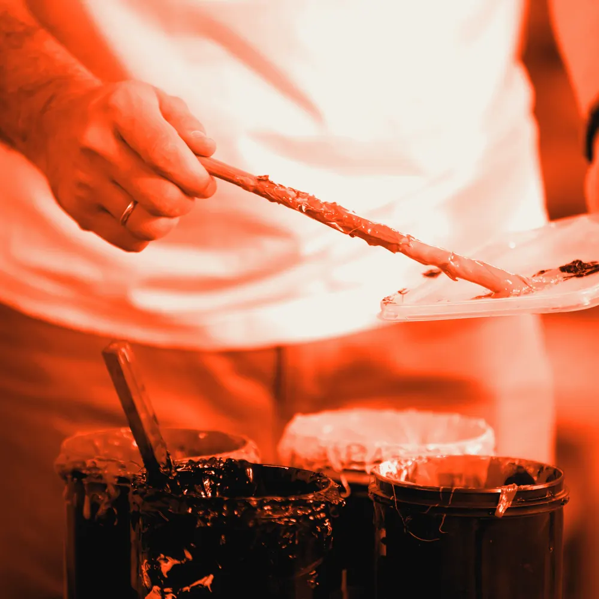

משטח כהה מכסה תמונה. העכבר שורף בו שביל לא אחיד, בשפה של השביל גחלים זוהרים וסביבן מסגרת חרוכה, ומתחת מתגלה התמונה. אחרי כמה שניות המשטח נסגר לאט, ואפשר לשרוף שוב.
מתי משתמשים: ברביקיו, מסעדת עץ ואש, מוזיקה, קעקועים, אמנות וכל מותג שהאש היא חלק מהסיפור. מתי לא: חומר רגיש, ילדים, בריאות, ועמוד שבו התמונה היא מידע שחייבים לראות בלי לעבוד בשבילו.
הדמו כאן עיצובי-ניטרלי בכוונה. כשהמהלך נכנס לפרויקט, מיובאת רק ההתנהגות: הצבעים, הרדיוסים, הפונטים והצללים יורשים את העיצוב של אותו פרויקט.
סדנאות דפוס
סדנה של יום שלם בדפוס עץ ובצריבה. יוצאים עם ידיים שחורות ועם משהו שאי אפשר להזמין באינטרנט.
לתאריכים הקרובים
הקוד כאן עומד בפני עצמו. כל טוקן עיצוב נושא ברירת מחדל, מחלקות העזר של המאגר מוטמעות בו, ותגי הסקריפט מסודרים לפי הסדר הנכון. פרויקט שמגדיר --accent או --line משלו יורש אותם אוטומטית.
/* מחלקות עזר של המאגר שהרכיב הזה משתמש בהן */
.stage{padding:var(--sec, clamp(120px, 12vw, 260px)) var(--gutter, clamp(24px, 5vw, 96px));position:relative}
.stage.tight{padding-block:clamp(48px,5vw,90px)}
.stage.full{padding-inline:0}
/* B140 · העכבר שורף את המשטח וחושף תמונה בקצה לוהט */
.em{display:grid;gap:clamp(24px,3vw,48px);padding:clamp(24px,4vw,64px) clamp(20px,5vw,72px)}
.em-tx{display:grid;gap:16px;grid-template-columns:minmax(0,1.3fr) minmax(0,1fr);align-items:end;column-gap:clamp(24px,4vw,64px)}
.em-k{margin:0;font-size:15px;font-weight:700;letter-spacing:.04em;color:var(--accent, #4a3aff);grid-column:1/-1}
.em-tx h2{margin:0;font-size:clamp(34px,4.4vw,64px);font-weight:800;line-height:1.05;letter-spacing:-.015em;text-wrap:balance}
.em-side{display:grid;gap:16px;justify-items:start}
.em-side p{margin:0;font-size:var(--fs-body, clamp(17px, 0.6vw + 0.7rem, 22px));line-height:1.6;color:var(--muted, #6a6d85)}
.em-cta{display:inline-flex;align-items:center;min-height:48px;padding:12px 24px;border-radius:999px;background:var(--ink, #16182b);color:var(--bg, #f7f7fa);font-weight:700;text-decoration:none}
.em-cta:focus-visible{outline:2px solid var(--accent, #4a3aff);outline-offset:3px}
.em-m{position:relative;overflow:hidden;border-radius:clamp(16px,2vw,28px);aspect-ratio:16/7;background:var(--surface,var(--bg, #f7f7fa));}
.em-m img,.em-m canvas{position:absolute;inset:0;width:100%;height:100%;display:block}
.em-m img{object-fit:cover}
.em-m canvas{opacity:0;transition:opacity .7s cubic-bezier(.2,.6,.2,1)}
.em.is-gl .em-m canvas{opacity:1}
@media(max-width:800px){.em{grid-template-columns:minmax(0,1fr)}.em-tx{grid-template-columns:minmax(0,1fr)}.em-m{aspect-ratio:4/5}}
@media(prefers-reduced-motion:reduce){.em-m canvas{transition:none}}<div class="stage"><section class="em" data-em>
<div class="em-tx">
<p class="em-k">סדנאות דפוס</p>
<h2>מה שעובר דרך האש כבר לא חוזר</h2>
<div class="em-side"><p>סדנה של יום שלם בדפוס עץ ובצריבה. יוצאים עם ידיים שחורות ועם משהו שאי אפשר להזמין באינטרנט.</p><a class="em-cta" href="#">לתאריכים הקרובים</a></div>
</div>
<div class="em-m">
<img src="https://liavwebdesign-spec.github.io/motion-vault/assets/media/real/s07/ink-hands.webp" width="1000" height="1000" alt="ידיים מוכתמות בדיו שחור" decoding="async" loading="lazy">
<canvas aria-hidden="true"></canvas>
</div>
</section></div>(function(){
function mvTex(root,frag,o){
if(!root)return null;
const cv=root.querySelector("canvas"),gl=cv.getContext("webgl",{alpha:!!o.alpha,antialias:false,depth:false,stencil:false,powerPreference:"low-power"});
if(!gl)return null; // התמונה הרגילה נשארת
const reduced=matchMedia("(prefers-reduced-motion: reduce)").matches;
const still=reduced||(!o.events&&matchMedia("(max-width:700px),(pointer:coarse)").matches);
const G="float h21(vec2 p){p=fract(p*vec2(123.34,456.21));p+=dot(p,p+45.32);return fract(p.x*p.y);}\n"+
"float vn(vec2 p){vec2 i=floor(p),f=fract(p);vec2 u=f*f*(3.-2.*f);return mix(mix(h21(i),h21(i+vec2(1.,0.)),u.x),mix(h21(i+vec2(0.,1.)),h21(i+vec2(1.,1.)),u.x),u.y);}\n"+
"float fbm(vec2 p){float a=.5,s=0.;for(int i=0;i<5;i++){s+=a*vn(p);p=p*2.03+vec2(17.,9.);a*=.5;}return s;}\n"+
"vec2 cov(vec2 uv,float a){float r=R.x/R.y;vec2 s=r>a?vec2(1.,a/r):vec2(r/a,1.);return (uv-.5)*s+.5;}\n";
const head="precision highp float;uniform vec2 R,M;uniform float T,H,P,I,A0,A1,A2,A3;uniform vec3 C0,C1,C2,C3;uniform sampler2D U0,U1,U2,U3;uniform vec3 V[24];\n"+G;
function sh(t,s){const x=gl.createShader(t);gl.shaderSource(x,s);gl.compileShader(x);if(!gl.getShaderParameter(x,gl.COMPILE_STATUS)){console.warn(gl.getShaderInfoLog(x));return null;}return x;}
const vs=sh(gl.VERTEX_SHADER,"attribute vec2 a;void main(){gl_Position=vec4(a,0.,1.);}"),fs=sh(gl.FRAGMENT_SHADER,head+frag);
if(!vs||!fs)return null;
const pr=gl.createProgram();gl.attachShader(pr,vs);gl.attachShader(pr,fs);gl.bindAttribLocation(pr,0,"a");gl.linkProgram(pr);gl.useProgram(pr);
gl.bindBuffer(gl.ARRAY_BUFFER,gl.createBuffer());gl.bufferData(gl.ARRAY_BUFFER,new Float32Array([-1,-1,3,-1,-1,3]),gl.STATIC_DRAW);
gl.enableVertexAttribArray(0);gl.vertexAttribPointer(0,2,gl.FLOAT,false,0,0);
gl.pixelStorei(gl.UNPACK_FLIP_Y_WEBGL,true);
const U=n=>gl.getUniformLocation(pr,n);
const px=document.createElement("canvas");px.width=px.height=1;const p2=px.getContext("2d",{willReadFrequently:true});
const probe=document.createElement("span");probe.hidden=true;root.appendChild(probe);
function rgb(v){probe.style.color=v;p2.fillStyle="#000";p2.fillStyle=getComputedStyle(probe).color;p2.fillRect(0,0,1,1);const d=p2.getImageData(0,0,1,1).data;return[d[0]/255,d[1]/255,d[2]/255];}
function cols(){(o.c||[]).forEach((v,i)=>gl.uniform3fv(U("C"+i),rgb(v)));}
[0,1,2,3].forEach(i=>gl.uniform1i(U("U"+i),i));
const rest=o.rest||[.5,.5],V=new Float32Array(72),tx=[],asp=[];
let w=1,h=1,mx=rest[0],my=rest[1],tm=mx,tn=my,seen=false,ready=false,started=false,raf=0,last=0,acc=o.t0||0,moved=-1e9,vi=0,lx=9,ly=9,video=null;
const api={P:o.p0||0,I:0,H:0,th:0,busy:false,V,still,reduced,over:false,kick:go,draw:frame,use};
function use(unit,i){gl.activeTexture(gl.TEXTURE0+unit);gl.bindTexture(gl.TEXTURE_2D,tx[i]);gl.uniform1f(U("A"+unit),asp[i]);}
function mark(x,y){if(Math.hypot(x-lx,y-ly)<(o.gap||.03))return;lx=x;ly=y;V[vi*3]=x;V[vi*3+1]=y;V[vi*3+2]=1;vi=(vi+1)%24;}
api.mark=mark;
function size(){const s=Math.min(devicePixelRatio||1,o.dpr||1.5);w=Math.max(1,Math.round(cv.clientWidth*s));h=Math.max(1,Math.round(cv.clientHeight*s));cv.width=w;cv.height=h;gl.viewport(0,0,w,h);}
function frame(){
if(video&&video.readyState>=2){gl.activeTexture(gl.TEXTURE0);gl.bindTexture(gl.TEXTURE_2D,tx[0]);gl.texImage2D(gl.TEXTURE_2D,0,gl.RGBA,gl.RGBA,gl.UNSIGNED_BYTE,video);gl.uniform1f(U("A0"),video.videoWidth/video.videoHeight);}
gl.uniform2f(U("R"),w,h);gl.uniform1f(U("T"),acc);gl.uniform2f(U("M"),mx,my);gl.uniform1f(U("H"),api.H);gl.uniform1f(U("P"),api.P);gl.uniform1f(U("I"),api.I);gl.uniform3fv(U("V"),V);
if(o.alpha)gl.clear(gl.COLOR_BUFFER_BIT);
gl.drawArrays(gl.TRIANGLES,0,3);
}
function loop(now){
raf=0;if(!seen||document.hidden||!ready)return;
const dt=Math.min(.05,(now-last)/1000);last=now;acc+=dt*(o.speed||1);
if(o.wander&&now-moved>2500){tm=rest[0]+o.wander[0]*Math.sin(acc*.5);tn=rest[1]+o.wander[1]*Math.sin(acc*.73+1);api.th=1;mark(tm,tn);}
mx+=(tm-mx)*(o.ease||.09);my+=(tn-my)*(o.ease||.09);api.H+=(api.th-api.H)*.06;
const dc=o.decay||.97;for(let i=0;i<24;i++)V[i*3+2]*=dc;
if(o.tick)o.tick(dt,api,now,mx,my);
frame();
if(!o.events||api.busy)raf=requestAnimationFrame(loop);
}
function go(){if(!raf&&ready&&seen&&!document.hidden&&(!still||o.events)){last=performance.now();raf=requestAnimationFrame(loop);}}
function reveal(){if(ready&&seen)root.classList.add("is-gl");}
function upload(src){const t=gl.createTexture();gl.bindTexture(gl.TEXTURE_2D,t);gl.texImage2D(gl.TEXTURE_2D,0,gl.RGBA,gl.RGBA,gl.UNSIGNED_BYTE,src);
gl.texParameteri(gl.TEXTURE_2D,gl.TEXTURE_MIN_FILTER,gl.LINEAR);gl.texParameteri(gl.TEXTURE_2D,gl.TEXTURE_MAG_FILTER,gl.LINEAR);gl.texParameteri(gl.TEXTURE_2D,gl.TEXTURE_WRAP_S,gl.CLAMP_TO_EDGE);gl.texParameteri(gl.TEXTURE_2D,gl.TEXTURE_WRAP_T,gl.CLAMP_TO_EDGE);return t;}
function strip(ims){const H0=640,cw=o.cell||740,gp=o.cellGap||28,c=document.createElement("canvas");c.width=(cw+gp)*ims.length;c.height=H0;const x=c.getContext("2d");
ims.forEach((im,i)=>{const a=cw/H0,ia=im.naturalWidth/im.naturalHeight;let sw=im.naturalWidth,sh=im.naturalHeight;if(ia>a)sw=sh*a;else sh=sw/a;x.drawImage(im,(im.naturalWidth-sw)/2,(im.naturalHeight-sh)/2,sw,sh,(cw+gp)*i+gp/2,0,cw,H0);});return c;}
function load(){
if(started)return;started=true;
Promise.all(o.imgs.map(s=>new Promise((res,rej)=>{const im=new Image();im.crossOrigin="anonymous";im.onload=()=>res(im);im.onerror=rej;im.src=s;}))).then(ims=>{
if(o.strip){const c=strip(ims);tx.push(upload(c));asp.push(c.width/c.height);}
else ims.forEach(im=>{tx.push(upload(im));asp.push(im.naturalWidth/im.naturalHeight);});
tx.slice(0,4).forEach((_,i)=>use(i,i));
if(o.video&&!still){video=document.createElement("video");video.muted=true;video.loop=true;video.playsInline=true;video.crossOrigin="anonymous";video.preload="none";video.src=o.video;}
size();cols();ready=true;
if(o.seed)o.seed(api);
if(still&&!o.events)api.H=1;
if(o.ready)o.ready(api);
frame();reveal();go();syncVideo();
}).catch(()=>{}); // תמונה שלא נטענה: נשארים על התמונה הרגילה
}
function syncVideo(){if(!video)return;if(seen&&!document.hidden){const p=video.play();if(p&&p.catch)p.catch(()=>{});}else video.pause();}
new ResizeObserver(()=>{if(ready){size();frame();}}).observe(cv);
new MutationObserver(()=>{if(ready){cols();frame();}}).observe(document.documentElement,{attributes:true});
new IntersectionObserver(([e])=>{seen=e.isIntersecting;if(seen){load();reveal();}go();syncVideo();},{rootMargin:"200px"}).observe(root);
document.addEventListener("visibilitychange",()=>{go();syncVideo();});
if(!still){
const box=o.area?(root.matches(o.area)?root:root.querySelector(o.area)):cv.parentElement;
box.addEventListener("pointermove",e=>{if(e.pointerType==="touch")return;const r=cv.getBoundingClientRect();tm=(e.clientX-r.left)/r.width;tn=1-(e.clientY-r.top)/r.height;moved=performance.now();api.over=true;if(!o.manualH)api.th=1;mark(tm,tn);if(!raf)go();});
box.addEventListener("pointerleave",()=>{api.over=false;if(!o.manualH)api.th=0;});
}
return api;
}
const root=document.querySelector("[data-em]");
const mask=document.createElement("canvas");mask.width=360;mask.height=158;const mx2=mask.getContext("2d");mx2.fillStyle="#000";mx2.fillRect(0,0,360,158);
const mgl=root.querySelector("canvas").getContext("webgl");let mtex=null;
function brush(x,y,r,a){const X=x*360,Y=(1-y)*158,g=mx2.createRadialGradient(X,Y,0,X,Y,r);g.addColorStop(0,"rgba(255,255,255,"+a+")");g.addColorStop(1,"rgba(255,255,255,0)");mx2.globalCompositeOperation="lighter";mx2.fillStyle=g;mx2.beginPath();mx2.arc(X,Y,r,0,6.3);mx2.fill();}
function pushMask(){if(!mtex)return;mgl.activeTexture(mgl.TEXTURE1);mgl.bindTexture(mgl.TEXTURE_2D,mtex);mgl.texImage2D(mgl.TEXTURE_2D,0,mgl.RGBA,mgl.RGBA,mgl.UNSIGNED_BYTE,mask);}
function seedMask(){for(let i=0;i<34;i++)brush(.2+i*.018,.46+.17*Math.sin(i*.31),30,.5);}
mvTex(root,"void main(){vec2 uv=gl_FragCoord.xy/R;float ax=R.x/R.y;vec2 p=uv*vec2(ax,1.);\nfloat n=fbm(p*4.+1.);float n2=fbm(p*17.+T*.25);\nfloat m=texture2D(U1,uv).r;float v=m+(n-.5)*.46+(n2-.5)*.1;\nvec3 img=texture2D(U0,cov(uv,A0)).rgb;\nfloat grain=fbm(p*38.);vec3 skin=mix(C2,C1,.1)*(.72+.56*grain);\nfloat d=v-.5;\nfloat cut=smoothstep(.0,.012,d);\nfloat char=smoothstep(-.12,-.012,d)*(1.-cut);\nvec3 c=mix(skin,skin*.16,char);\nc=mix(c,img,cut);\nfloat fl=.72+.28*sin(T*5.+n2*14.);\nfloat hot=smoothstep(.045,.0,abs(d));\nc+=vec3(1.,.42,.08)*hot*1.25*fl;c+=vec3(1.,.82,.5)*smoothstep(.014,.0,abs(d))*.8*fl;\nc*=1.-.28*cut*smoothstep(.1,.0,d);\ngl_FragColor=vec4(c,1.);}",{c:["var(--bg)","var(--accent)","var(--ink)","color-mix(in srgb,var(--accent) 25%,var(--bg))"],imgs:["https://liavwebdesign-spec.github.io/motion-vault/assets/media/real/s07/ink-hands.webp"],rest:[.5,.5],wander:[.36,.26],ease:.1,
ready:function(a){mtex=mgl.createTexture();mgl.activeTexture(mgl.TEXTURE1);mgl.bindTexture(mgl.TEXTURE_2D,mtex);[[mgl.TEXTURE_MIN_FILTER,mgl.LINEAR],[mgl.TEXTURE_MAG_FILTER,mgl.LINEAR],[mgl.TEXTURE_WRAP_S,mgl.CLAMP_TO_EDGE],[mgl.TEXTURE_WRAP_T,mgl.CLAMP_TO_EDGE]].forEach(p=>mgl.texParameteri(mgl.TEXTURE_2D,p[0],p[1]));seedMask();pushMask();a.use(0,0);},
tick:function(dt,a,now,x,y){if(a.H>.2)brush(x,y,27,.5);mx2.globalCompositeOperation="source-over";mx2.fillStyle="rgba(0,0,0,.006)";mx2.fillRect(0,0,360,158);pushMask();}});
})();